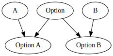
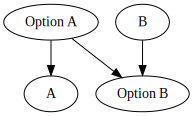

Recently I have finally taken it upon myself to start learning rust. In the process of writing a vulkan raytracer in C++ I got so incredibly fed up with its tedious memory management, header/source duplication, and most of all bad IDE tooling, that I had to find something better. Rust had been the common subject of chatter around me and so I decided to see what all the fuss was about.
The first thing I noticed was that the tooling was incredibly effective and simple to set up. Never before had it taken me that little time to add a new language server to my Neovim setup. Moreover, the speed and helpfulness is amazing.
Hello world and printing some prime numbers came and went quickly. Time to mess around with some feature that caught my eye: associated types. Is rust the best of haskell and c++ together? Let's see if we can make our beloved Functor, Applicative, Monad hierarchy is this new world.
I have to mention first of all this post by Edmund Smith from whom I've stolen a few core traits needed to make this work. But I believe that in the end I ended up with a simpler, more elegant solution and therefore I think this post adds something to the discussion.
The first thing we need to realize is that a Functor is not defined over a traditional 'complete' type. Instead it is defined
over a type with kind * -> *. An example would be Maybe, or as Rustians like to call it: Option. Take a look at the definition
of Functor in haskell
We expect f to be type to which we can still apply another type. And there lies our first problem, we lack this ability in Rust. There are proposals to add this functionality and whilst certainly not trivial, there seems to be little reason to suspect that this feature will conflict with the core language principles.
However, for the time being we need to hack it in ourselves. Copying from Edmund, I've decided upon two traits that just implement
the associated type magic needed for our purposes. You see, at no time do we actually need the unapplied, generic Option type, as long as we can convert an Option<A> to an Option<B>
For comparison, here is how we build our needed types in haskell:
And this is how we are going to do it in rust:
To facilitate said type construction/destructing, we need two administrative traits with an associated type. Users need to implement these traits on their types before they can start making implementing any other traits that operate on higher kinded types.
The first of these is Generic1, which allows us to take the A out of Option<A>, or rather the type (I)nside:
Secondly, we need a way to replace the inner type of Option. We do that using the trait Plug:
Option, making it often impossible to derive
the types of expressions.
Functor trait quite easily, albeit syntactically a bit
of a mess.
{% call macros.code("rust") %}
trait Functor {
fn fmap(&self, f: &dyn Fn(&Which produces the following output:
{% call macros.code("sh") %} x: Some(5), x2: None, y: Some(6), y2: None, z: Some("bound!"), z2: None, geval: Some("69=69") {% endcall %}So yes! You can use higher kinded types in rust. Whether you should I will leave up to you. But it certainly doesn't seem like a very attractive option for most projects considering the syntactic noise of the implementation, a typechecker that gets often confused and requires help, as well as error messages that don't make much sense. Especially the last is a shame since extremely helpful error messages is what rust is known for, and I wholeheartedly agree (under normal circumstances).
{% endblock %}